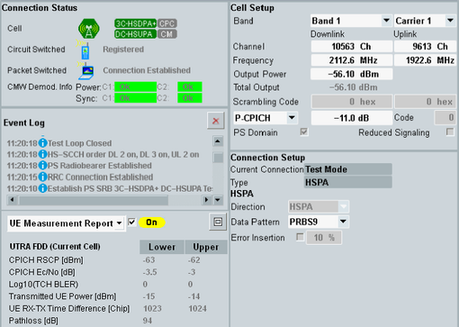
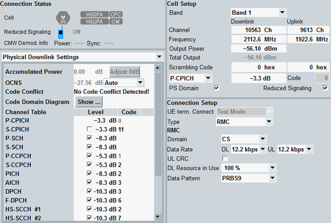

Signaling View
The signaling view shows status information, information derived from the uplink signal and the most important settings. Most settings in this view can also be accessed via the configuration dialog.
For the shortcut softkeys, refer to "Using the Shortcut Softkeys".

WCDMA signaling view
In reduced signaling mode, the UE does not register and does not send measurement reports. The information normally displayed in the lower left part is not available (UE measurement report, UE capabilities, UE info).
Instead, a quick access to the physical channel downlink settings is provided (see "Physical Channel Downlink Settings"). Alternatively you can display the event log.

WCDMA signaling view for reduced signaling
For descriptions of the individual areas of the view, refer to the subsections.